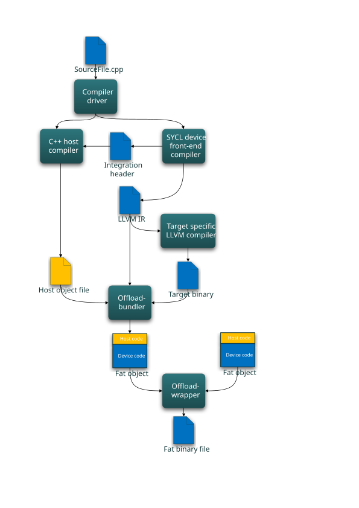
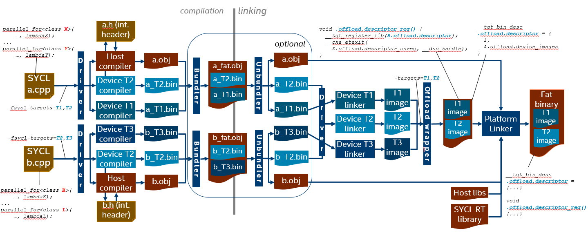
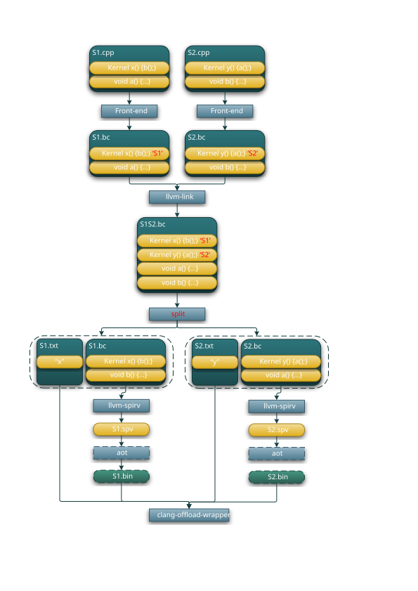

oneAPI DPC++ Compiler and Runtime architecture design¶
Introduction¶
This document describes the architecture of the DPC++ compiler and runtime library. For DPC++ specification see spec.
DPC++ Compiler architecture¶
DPC++ application compilation flow:

DPC++ compiler logically can be split into the host compiler and a number of device compilers—one per each supported target. Clang driver orchestrates the compilation process, it will invoke the device compiler once per each requested target, then it will invoke the host compiler to compile the host part of a SYCL source. The result of compilation is a set of so-called “fat objects” - one fat object per SYCL source file. A fat object contains compiled host code and a number of compiled device code instances—one per each target. Fat objects can be linked into “fat binary”.
SYCL sources can be also compiled as a regular C++ code, in this mode there is no “device part” of the code—everything is executed on the host.
Device compiler is further split into the following major components:
Front-end - parses input source, outlines “device part” of the code, applies additional restrictions on the device code (e.g. no exceptions or virtual calls), generates LLVM IR for the device code only and “integration header” which provides information like kernel name, parameters order and data type for the runtime library.
Middle-end - transforms the initial LLVM IR to get consumed by the back-end. Today middle-end transformations include just a couple of passes:
Optionally: Address space inference pass
TBD: potentially the middle-end optimizer can run any LLVM IR transformation with only one limitation: back-end compiler should be able to handle transformed LLVM IR.
Optionally: LLVM IR → SPIR-V translator.
Back-end - produces native “device” code in ahead-of-time compilation mode.
SYCL support in Clang front-end¶
SYCL support in Clang front-end can be split into the following components:
Device code outlining. This component is responsible for identifying and outlining “device code” in the single source.
SYCL kernel function object (functor or lambda) lowering. This component creates an OpenCL kernel function interface for SYCL kernels.
Device code diagnostics. This component enforces language restrictions on device code.
Integration header generation. This component emits information required for binding host and device parts of the SYCL code via OpenCL API.
Device code outlining¶
Here is a code example of a SYCL program that demonstrates compiler outlining work:
int foo(int x) { return ++x; }
int bar(int x) { throw std::exception{"CPU code only!"}; }
...
using namespace cl::sycl;
queue Q;
buffer<int, 1> a{range<1>{1024}};
Q.submit([&](handler& cgh) {
auto A = a.get_access<access::mode::write>(cgh);
cgh.parallel_for<init_a>(range<1>{1024}, [=](id<1> index) {
A[index] = index[0] * 2 + foo(42);
});
}
...
In this example, the compiler needs to compile the lambda expression passed
to the cl::sycl::handler::parallel_for method, as well as the function foo
called from the lambda expression for the device.
The compiler must also ignore the bar function when we compile the
“device” part of the single source code, as it’s unused inside the device
portion of the source code (the contents of the lambda expression passed to the
cl::sycl::handler::parallel_for and any function called from this lambda
expression).
The current approach is to use the SYCL kernel attribute in the runtime to
mark code passed to cl::sycl::handler::parallel_for as “kernel functions”.
The runtime library can’t mark foo as “device” code - this is a compiler
job: to traverse all symbols accessible from kernel functions and add them to
the “device part” of the code marking them with the new SYCL device attribute.
Lowering of lambda function objects and named function objects¶
All SYCL memory objects shared between host and device (buffers/images,
these objects map to OpenCL buffers and images) must be accessed through special
accessor classes. The “device” side implementation of these classes contain
pointers to the device memory. As there is no way in OpenCL to pass structures
with pointers inside as kernel arguments all memory objects shared between host
and device must be passed to the kernel as raw pointers.
SYCL also has a special mechanism for passing kernel arguments from host to
the device. In OpenCL kernel arguments are set by calling clSetKernelArg function
for each kernel argument, meanwhile in SYCL all the kernel arguments are fields of
“SYCL kernel function” which can be defined as a lambda function or a named function
object and passed as an argument to SYCL function for invoking kernels (such as
parallel_for or single_task). For example, in the previous code snippet above
accessor A is one such captured kernel argument.
To facilitate the mapping of SYCL kernel data members to OpenCL kernel arguments and overcome OpenCL limitations we added the generation of an OpenCL kernel function inside the compiler. An OpenCL kernel function contains the body of the SYCL kernel function, receives OpenCL-like parameters and additionally does some manipulation to initialize SYCL kernel data members with these parameters. In some pseudo code the OpenCL kernel function for the previous code snippet above looks like this:
// SYCL kernel is defined in SYCL headers:
template <typename KernelName, typename KernelType/*, ...*/>
__attribute__((sycl_kernel)) void sycl_kernel_function(KernelType KernelFuncObj) {
// ...
KernelFuncObj();
}
// Generated OpenCL kernel function
__kernel KernelName(global int* a) {
KernelType KernelFuncObj; // Actually kernel function object declaration
// doesn't have a name in AST.
// Let the kernel function object have one captured field - accessor A.
// We need to init it with global pointer from arguments:
KernelFuncObj.A.__init(a);
// Body of the SYCL kernel from SYCL headers:
{
KernelFuncObj();
}
}
OpenCL kernel function is generated by the compiler inside the Sema using AST nodes.
SYCL support in the driver¶
SYCL offload support in the driver is based on the clang driver concepts and defines:
target triple and a native tool chain for each target (including “virtual” targets like SPIR-V).
SYCL offload action based on generic offload action
Enable SYCL offload¶
To enable compilation following single-source multiple compiler-passes (SMCP) technique which is described in the SYCL specification, a special option must be passed to the clang driver:
-fsycl
With this option specified, the driver will invoke the host compiler and a
number of SYCL device compilers for targets specified in the -fsycl-targets
option. If -fsycl-targets is not specified, then single SPIR-V target is
assumed, and single device compiler for this target is invoked.
The option -sycl-std allows specifying which version of
the SYCL standard will be used for the compilation.
The default value for this option is 1.2.1.
Ahead of time (AOT) compilation¶
Ahead-of-time compilation is the process of invoking the back-end at compile time to produce the final binary, as opposed to just-in-time (JIT) compilation when final code generation is deferred until application runtime time.
AOT compilation reduces application execution time by skipping JIT compilation and final device code can be tested before deploy.
JIT compilation provides portability of device code and target specific optimizations.
List of native targets¶
The ahead-of-time compilation mode implies that there must be a way to specify a set of target architectures for which to compile device code. By default the compiler generates SPIR-V and OpenCL device JIT compiler produces native target binary.
There are existing options for OpenMP* offload:
-fopenmp-targets=triple1,triple2
would produce binaries for target architectures identified by target triples
triple1 and triple2.
A similar approach is used for SYCL:
-fsycl-targets=triple1,triple2
will produce binaries from SYCL kernels for devices identified by the two
target triples. This basically tells the driver which device compilers must be
invoked to compile the SYCL kernel code. By default, the JIT compilation
approach is assumed and device code is compiled for a single target triple -
[spir,spir64]-*-*.
Device code formats¶
Each target may support a number of code forms, each device compiler defines
and understands mnemonics designating a particular code form, for example
“visa:3.3” could designate virtual ISA version 3.3 for Intel GPU target (Gen
architecture). User can specify desired code format using the target-specific
option mechanism, similar to OpenMP.
-Xsycl-target-backend=<triple> "arg1 arg2 ..."
For example, to support offload to Gen9/vISA3.3, the following options would be used:
-fsycl -fsycl-targets=spir64_gen-unknown-unknown-sycldevice -Xsycl-target-backend "-device skl"
The driver passes the -device skl parameter directly to the Gen device backend compiler
without parsing it.
TBD: Having multiple code forms for the same target in the fat binary might
mean invoking device compiler multiple times. Multiple invocations are not
needed if these forms can be dumped at various compilation stages by the single
device compilation, like SPIR-V → visa → ISA. But if e.g. gen9:visa3.2 and
gen9:visa3.3 are needed at the same time, then some mechanism is needed.
Should it be a dedicated target triple for each needed visa version or Gen
generation?
Separate Compilation and Linking¶
The compiler supports linking of device code obtained from different source files before generating the final SPIR-V to be fed to the back-end. The basic mechanism is to produce “fat objects” as a result of compilation—object files containing both host and device code for all targets—then break fat objects into their constituents before linking and link host code and device code (per-target) separately and finally produce a “fat binary” - a host executable with embedded linked images for each target specified at the command line.

The clang driver orchestrates compilation and linking process based on a SYCL-specific offload action builder and invokes external tools as needed. On the diagram above, every dark-blue box is a tool invoked as a separate process by the clang driver.
Compilation starts with compiling the input source a.cpp for one of the
targets requested via the command line - T2. When doing this first
compilation, the driver requests the device compiler to generate an
“integration header” via a special option. Device compilation for other targets
- T1 - don’t need to generate the integration header, as it must be the same
for all the targets.
Design note: Current design does not use the host compiler to produce the integration header for two reasons: first, it must be possible to use any host compiler to produce SYCL heterogeneous application, and second, even if the same clang is used for the host compilation, information provided in the integration header is used (included) by the SYCL runtime implementation so it must be ready before host compilation starts.
Now, after all the device compilations are completed resulting in a_T2.bin
and a_T1.bin, and the integration header a.h is generated, the driver
invokes the host compiler passing it the integration header via -include
option to produce the host object a.obj. Then the offload bundler tool is
invoked to pack a_T2.bin, a_T1.bin and a.obj into a_fat.obj - the fat
object file for the source a.cpp.
The compilation process is repeated for all the sources in the application (maybe on different machines).
Device linking starts with breaking the fat objects back into constituents with
the unbundler tool (bundler invoked with -unbundle option). For each fat
object the unbundler produces a target list file which contains pairs
“<target-triple>, <filename>” each representing a device object extracted
from the fat object and its target. Once all the fat objects are unbundled, the
driver uses the target list files to construct a list of targets available for
linking and a list of corresponding object files for each: “<T1: a_T1.bin>, <T2: a_T2.bin, b_T2.bin>, <T3: b_T3.bin>”. Then the driver invokes linkers for
each of the targets to produce device binary images for those targets.
Current implementation uses LLVM IR as a default device binary format for fat objects and translates “linked LLVM IR” to SPIR-V. One of the reasons for this
decision is that SPIR-V doesn’t support linking template functions, which could
be defined in multiple modules and linker must resolve multiple definitions.
LLVM IR uses function attributes to satisfy “one definition rule”, which have
no counterparts in SPIR-V.
Host linking starts after all device images are produced - with invocation of the offload wrapper tool. Its main function is to create a host object file wrapping all the device images and provide the runtime with access to that information. So when creating the host wrapper object the offload wrapper tool does the following:
creates a
.sycl_offloading.descriptorsymbol which is a structure containing the number of device images and the array of the device images themselves
struct __tgt_device_image {
void *ImageStart;
void *ImageEnd;
};
struct __tgt_bin_desc {
int32_t NumDeviceImages;
__tgt_device_image *DeviceImages;
};
__tgt_bin_desc .sycl_offloading.descriptor;
creates a
void .sycl_offloading.descriptor_reg()function and registers it for execution at module loading; this function invokes the__tgt_register_libregistration function (the name can also be specified via an option) which must be implemented by the runtime and which registers the device images with the runtime:
void __tgt_register_lib(__tgt_bin_desc *desc);
creates a
void .sycl_offloading.descriptor_unreg()function and registers it for execution at module unloading; this function calls the__tgt_unregister_libfunction (the name can also be specified via an option) which must be implemented by the runtime and which unregisters the device images with the runtime:
void __tgt_unregister_lib(__tgt_bin_desc *desc);
Once the offload wrapper object file is ready, the driver finally invokes the host linker giving it the following input:
all the application host objects (result of compilation or unbundling)
the offload wrapper object file
all the host libraries needed by the application
the SYCL runtime library
The result is so-called “fat binary image” containing the host code, code for all the targets plus the registration/unregistration functions and the information about the device binary images.
When compilation and linking is done in single compiler driver invocation, the bundling and unbundling steps are skipped.
Design note: the described scheme differs from current llvm.org implementation. Current design uses Linux-specific linker script approach and requires that all the linked fat objects are compiled for the same set of targets. The described design uses OS-neutral offload-wrapper tool and does not impose restrictions on fat objects.
Device Link¶
The -fsycl-link flag instructs the compiler to fully link device code without fully linking host code. The result of such a compile is a fat object that contains a fully linked device binary. The primary motivation for this flow is to allow users to save re-compile time when making changes that only affect their host code. In the case where device image generation takes a long time (e.g. FPGA), this savings can be significant.
For example, if the user separated source code into four files: dev_a.cpp, dev_b.cpp, host_a.cpp and host_b.cpp where only dev_a.cpp and dev_b.cpp contain device code, they can divide the compilation process into three steps:
Device link: dev_a.cpp dev_b.cpp -> dev_image.o (contain device image)
Host Compile (c): host_a.cpp -> host_a.o; host_b.cpp -> host_b.o
Linking: dev_image.o host_a.o host_b.o -> executable
Step 1 can take hours for some targets. But if the user wish to recompile after modifying only host_a.cpp and host_b.cpp, they can simply run steps 2 and 3 without rerunning the expensive step 1.
The compiler is responsible for verifying that the user provided all the relevant files to the device link step. There are 2 cases that have to be checked:
Missing symbols referenced by the kernels present in the device link step (e.g. functions called by or global variables used by the known kernels).
Missing kernels.
Case 1 can be identified in the device binary generation stage (step 1) by scanning the known kernels. Case 2 must be verified by the driver by checking for newly introduced kernels in the final link stage (step 3).
The llvm-no-spir-kernel tool was introduced to facilitate checking for case 2 in the driver. It detects if a module includes kernels and is invoked as follows:
llvm-no-spir-kernel host.bc
It returns 0 if no kernels are present and 1 otherwise.
Device code split¶
Putting all device code into a single SPIRV module does not work well in the following cases:
There are thousands of kernels defined and only small part of them is used at run-time. Having them all in one SPIR-V module significantly increases JIT time.
Device code can be specialized for different devices. For example, kernels that are supposed to be executed only on FPGA can use extensions avaliable for FPGA only. This will cause JIT compilation failure on other devices even if this particular kernel is never called on them.
To resolve these problems the compiler can split a single module into smaller ones. The following features is supported:
Emitting a separate module for source (translation unit)
Emitting a separate module for each kernel
The current approach is:
Generate special meta-data with translation unit ID for each kernel in SYCL front-end. This ID will be used to group kernels on per-translation unit basis
Link all device LLVM modules using llvm-link
Perform split on a fully linked module
Generate a symbol table (list of kernels) for each produced device module for proper module selection in runtime
Perform SPIR-V translation and AOT compilation (if requested) on each produced module separately
Add information about presented kernels to a wrappring object for each device image
Device code splitting process:

The “split” box is implemented as functionality of the dedicated tool
sycl-post-link. The tool runs a set of LLVM passes to split input module and
generates a symbol table (list of kernels) for each produced device module.
To enable device code split, a special option must be passed to the clang driver:
-fsycl-device-code-split=<value>
There are three possible values for this option:
per_source- enables emitting a separate module for each source (translation unit)per_kernel- enables emitting a separate module for each kerneloff- disables device code split
Integration with SPIR-V format¶
This section explains how to generate SPIR-V specific types and operations from C++ classes and functions.
Translation of SYCL C++ programs to the code executable on heterogeneous systems can be considered as three step process:
translation of SYCL C++ programs into LLVM IR
translation from LLVM IR to SPIR-V
translation from SPIR-V to machine code
LLVM-IR to SPIR-V translation is performed by a dedicated tool - translator. This tool correctly translates most of regular LLVM IR types/operations/etc to SPIR-V.
For example:
Type:
i32→OpTypeIntOperation:
load→OpLoadCalls:
call→OpFunctionCall
SPIR-V defines special built-in types and operations that do not have corresponding equivalents in LLVM IR. E.g.
Type: ??? →
OpTypeEventOperation: ??? →
OpGroupAsyncCopy
Translation from LLVM IR to SPIR-V for special types is also supported, but
such LLVM IR must comply to some special requirements. Unfortunately there is
no canonical form of special built-in types and operations in LLVM IR, moreover
we can’t re-use existing representation generated by OpenCL C front-end
compiler. For instance here is how OpGroupAsyncCopy operation looks in LLVM IR
produced by OpenCL C front-end compiler.
@_Z21async_work_group_copyPU3AS3fPU3AS1Kfjj(float addrspace(3)*, float addrspace(1)*, i32, i32)
It’s a regular function, which can conflict with user code produced from C++ source.
DPC++ compiler uses modified solution developed for OpenCL C++ compiler prototype:
Compiler: https://github.com/KhronosGroup/SPIR/tree/spirv-1.1
Headers: https://github.com/KhronosGroup/libclcxx
Our solution re-uses OpenCL data types like sampler, event, image types, etc, but we use different spelling to avoid potential conflicts with C++ code. Spelling convention for the OpenCL types enabled in SYCL mode is:
__ocl_<OpenCL_type_name> // e.g. __ocl_sampler_t, __ocl_event_t
Operations using OpenCL types use special naming convention described in this document. This solution allows us avoid SYCL specialization in SPIR-V translator and leverage clang infrastructure developed for OpenCL types.
SPIR-V operations that do not have LLVM equivalents are declared (but not defined) in the headers and satisfy following requirements:
the operation is expressed in C++ as
externfunction not throwing C++ exceptionsthe operation must not have the actual definition in C++ program
For example, the following C++ code is successfully recognized and translated
into SPIR-V operation OpGroupAsyncCopy:
template <typename dataT>
extern __ocl_event_t
__spirv_OpGroupAsyncCopy(int32_t Scope, __local dataT *Dest,
__global dataT *Src, size_t NumElements,
size_t Stride, __ocl_event_t E) noexcept;
__ocl_event_t e =
__spirv_OpGroupAsyncCopy(cl::__spirv::Scope::Workgroup,
dst, src, numElements, 1, E);
Some details and agreements on using SPIR-V special types and operations¶
The SPIR-V specific C++ enumerators and classes are declared in the file:
sycl/include/CL/__spirv/spirv_types.hpp.
The SPIR-V specific C++ function declarations are in the file:
sycl/include/CL/__spirv/spirv_ops.hpp.
The SPIR-V specific functions are implemented in for the SYCL host device here:
sycl/source/spirv_ops.cpp.
Address spaces handling¶
SYCL 1.2.1 language defines several address spaces where data can reside, the same as OpenCL - global, local, private and constant. From the spec: “In OpenCL C, these address spaces are manually specified using OpenCL-specific keywords. In SYCL, the device compiler is expected to auto-deduce the address space for pointers in common situations of pointer usage. However, there are situations where auto-deduction is not possible”.
We believe that requirement for the compiler to automatically deduce address spaces is too strong. Instead the following approach will be implemented in the compiler:
TBD
Compiler/Runtime interface¶
DPC++ Runtime architecture¶
TBD
DPC++ Language extensions to SYCL¶
List of language extensions can be found at extensions